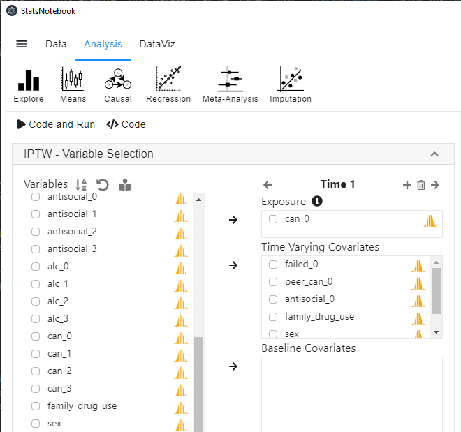
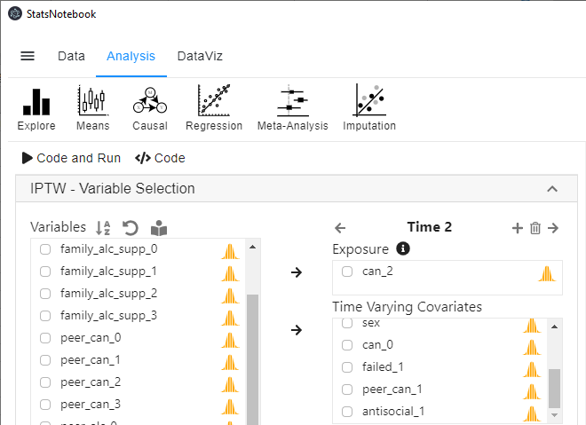
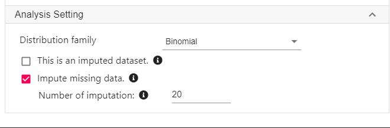
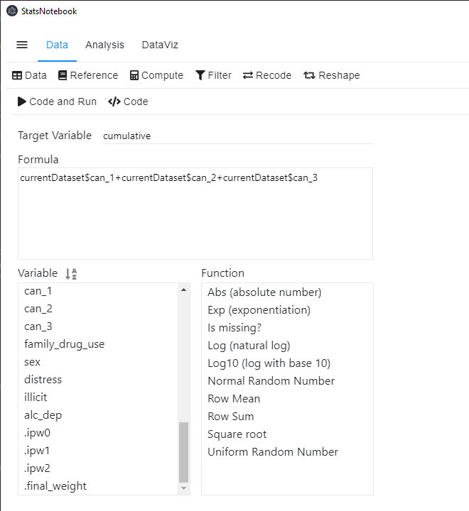
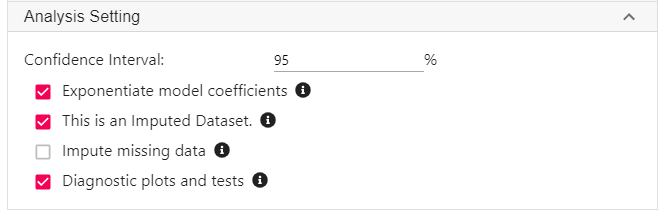

Follow our Facebook page or our developer’s Twitter for more tutorials and future updates
This is a follow-up tutorial built on our tutorial on inverse probability treatment weight. In this tutorial, we use the same example, but with some missing data in the dataset. It is recommended that you read our tutorial on inverse probability treatment weight first.
The example data can be downloaded from here.
If your dataset has missing data, multiple imputation can be firstly used to impute the missing value. StatsNotebook provides a shortcut for incorporating multiple imputation with IPTW. The shortcut method will only use variables for the IPTW calculation to impute the missing value. If more auxiliary variables or interaction between variables are needed for the imputation, we can conduct the imputation manually first. This tutorial will demonstrate the shortcut method.
In the presence of missing data,
StatsNotebook uses the mice package for multiple imputation, and then uses the mitools package to combine results from the outcome models to form final estimates using Rubin’s formula.
The section below will provide a step-by-step guide on using IPTW with multiple imputations to answer the research question
In this example dataset, the key variables are
The suffix of each variable indicates the time point the data is collected. For example, peer_can_0 represents the number of peers who used cannabis at baseline (wave 0).
For the detailed setup of this analysis, please see our tutorial on inverse probability treatment weight, in which we used a complete dataset instead of one with missing data.
Prior to calculating the IPTW, we will need to conduct a descriptive analysis and it is always good practice to visualise the data.
To perform multiple imputation and then to calculate the IPTW for each imputed dataset,


Repeat step 5 and 6 for can_3.
Select illicit into Outcome.
Expand the panel Analysis Setting at the below the variable selection panel.
For Distribution family, select Binomial.
Click Impute missing data. In this example, we specify 20 imputations.

library(ipw)
currentDataset <- currentDataset[which(currentDataset$.imp == 0),]
currentDataset <- currentDataset[!(names(currentDataset) %in% c(".id", ".imp"))]
"Impute missing data"
library(mice)
library(mitools)
formulas <- make.formulas(currentDataset)
formulas$illicit =illicit ~ can_1 + failed_0 + peer_can_0 + antisocial_0 + can_0 + family_drug_use + sex + can_2 + failed_1 + peer_can_1 + antisocial_1 + can_3 + failed_2 + peer_can_2 + antisocial_2
formulas$can_1 =can_1 ~ illicit + failed_0 + peer_can_0 + antisocial_0 + can_0 + family_drug_use + sex + can_2 + failed_1 + peer_can_1 + antisocial_1 + can_3 + failed_2 + peer_can_2 + antisocial_2
formulas$failed_0 =failed_0 ~ illicit + can_1 + peer_can_0 + antisocial_0 + can_0 + family_drug_use + sex + can_2 + failed_1 + peer_can_1 + antisocial_1 + can_3 + failed_2 + peer_can_2 + antisocial_2
formulas$peer_can_0 =peer_can_0 ~ illicit + can_1 + failed_0 + antisocial_0 + can_0 + family_drug_use + sex + can_2 + failed_1 + peer_can_1 + antisocial_1 + can_3 + failed_2 + peer_can_2 + antisocial_2
formulas$antisocial_0 =antisocial_0 ~ illicit + can_1 + failed_0 + peer_can_0 + can_0 + family_drug_use + sex + can_2 + failed_1 + peer_can_1 + antisocial_1 + can_3 + failed_2 + peer_can_2 + antisocial_2
formulas$can_0 =can_0 ~ illicit + can_1 + failed_0 + peer_can_0 + antisocial_0 + family_drug_use + sex + can_2 + failed_1 + peer_can_1 + antisocial_1 + can_3 + failed_2 + peer_can_2 + antisocial_2
formulas$family_drug_use =family_drug_use ~ illicit + can_1 + failed_0 + peer_can_0 + antisocial_0 + can_0 + sex + can_2 + failed_1 + peer_can_1 + antisocial_1 + can_3 + failed_2 + peer_can_2 + antisocial_2
formulas$sex =sex ~ illicit + can_1 + failed_0 + peer_can_0 + antisocial_0 + can_0 + family_drug_use + can_2 + failed_1 + peer_can_1 + antisocial_1 + can_3 + failed_2 + peer_can_2 + antisocial_2
formulas$can_2 =can_2 ~ illicit + can_1 + failed_0 + peer_can_0 + antisocial_0 + can_0 + family_drug_use + sex + failed_1 + peer_can_1 + antisocial_1 + can_3 + failed_2 + peer_can_2 + antisocial_2
formulas$failed_1 =failed_1 ~ illicit + can_1 + failed_0 + peer_can_0 + antisocial_0 + can_0 + family_drug_use + sex + can_2 + peer_can_1 + antisocial_1 + can_3 + failed_2 + peer_can_2 + antisocial_2
formulas$peer_can_1 =peer_can_1 ~ illicit + can_1 + failed_0 + peer_can_0 + antisocial_0 + can_0 + family_drug_use + sex + can_2 + failed_1 + antisocial_1 + can_3 + failed_2 + peer_can_2 + antisocial_2
formulas$antisocial_1 =antisocial_1 ~ illicit + can_1 + failed_0 + peer_can_0 + antisocial_0 + can_0 + family_drug_use + sex + can_2 + failed_1 + peer_can_1 + can_3 + failed_2 + peer_can_2 + antisocial_2
formulas$can_3 =can_3 ~ illicit + can_1 + failed_0 + peer_can_0 + antisocial_0 + can_0 + family_drug_use + sex + can_2 + failed_1 + peer_can_1 + antisocial_1 + failed_2 + peer_can_2 + antisocial_2
formulas$failed_2 =failed_2 ~ illicit + can_1 + failed_0 + peer_can_0 + antisocial_0 + can_0 + family_drug_use + sex + can_2 + failed_1 + peer_can_1 + antisocial_1 + can_3 + peer_can_2 + antisocial_2
formulas$peer_can_2 =peer_can_2 ~ illicit + can_1 + failed_0 + peer_can_0 + antisocial_0 + can_0 + family_drug_use + sex + can_2 + failed_1 + peer_can_1 + antisocial_1 + can_3 + failed_2 + antisocial_2
formulas$antisocial_2 =antisocial_2 ~ illicit + can_1 + failed_0 + peer_can_0 + antisocial_0 + can_0 + family_drug_use + sex + can_2 + failed_1 + peer_can_1 + antisocial_1 + can_3 + failed_2 + peer_can_2
meth <- make.method(currentDataset)
meth["failed_3"] <- ""
meth["family_alc_supp_0"] <- ""
meth["family_alc_supp_1"] <- ""
meth["family_alc_supp_2"] <- ""
meth["family_alc_supp_3"] <- ""
meth["peer_can_3"] <- ""
meth["peer_alc_0"] <- ""
meth["peer_alc_1"] <- ""
meth["peer_alc_2"] <- ""
meth["peer_alc_3"] <- ""
meth["antisocial_3"] <- ""
meth["alc_0"] <- ""
meth["alc_1"] <- ""
meth["alc_2"] <- ""
meth["alc_3"] <- ""
meth["distress"] <- ""
meth["alc_dep"] <- ""
meth[".ipw0"] <- ""
meth[".ipw1"] <- ""
meth[".ipw2"] <- ""
meth[".final_weight"] <- ""
imputedDataset <- parlmice(currentDataset,
method = meth,
formulas = formulas,
m = 20,
n.core = 15,
n.imp.core = 2)
plot(imputedDataset)
currentDataset <- complete(imputedDataset, action = "long", include = TRUE)
"Calculate IPTW"
split_imp <- currentDataset$.imp
mi_dataList <- split(currentDataset, split_imp)
for(i in 2:length(mi_dataList)) {
weight <- ipwpoint(exposure = can_1, family = "binomial", link = "logit",
numerator =~ 1,
denominator =~ failed_0+peer_can_0+antisocial_0+can_0+family_drug_use+sex,
trunc = 0.01, data = as.data.frame(mi_dataList[[i]]))
mi_dataList[[i]]$.ipw0 = weight$weights.trunc
weight <- ipwpoint(exposure = can_2, family = "binomial", link = "logit",
numerator =~ can_1,
denominator =~ can_1+failed_0+peer_can_0+antisocial_0+can_0+family_drug_use+sex+failed_1+peer_can_1+antisocial_1,
trunc = 0.01, data = as.data.frame(mi_dataList[[i]]))
mi_dataList[[i]]$.ipw1 = weight$weights.trunc
weight <- ipwpoint(exposure = can_3, family = "binomial", link = "logit",
numerator =~ can_1+can_2,
denominator =~ can_1+can_2+failed_0+peer_can_0+antisocial_0+can_0+family_drug_use+sex+failed_1+peer_can_1+antisocial_1+failed_2+peer_can_2+antisocial_2,
trunc = 0.01, data = as.data.frame(mi_dataList[[i]]))
mi_dataList[[i]]$.ipw2 = weight$weights.trunc
mi_dataList[[i]]$.final_weight <- mi_dataList[[i]]$.ipw0*mi_dataList[[i]]$.ipw1*mi_dataList[[i]]$.ipw2
}
mi_dataList[[1]]$.ipw0 <- NA
mi_dataList[[1]]$.ipw1 <- NA
mi_dataList[[1]]$.ipw2 <- NA
mi_dataList[[1]]$.final_weight <- NA
currentDataset <- unsplit(mi_dataList, split_imp)
"Chan, G. and StatsNotebook Team (2020). StatsNotebook. (Version 0.1.0) [Computer Software]. Retrieved from https://www.statsnotebook.io"
"R Core Team (2020). The R Project for Statistical Computing. [Computer software]. Retrieved from https://r-project.org"
"van der Wal, W. M. and R. B. Geskus (2011). ipw: an R package for inverse probability weighting. J Stat Softw 43(13): 1-23."
Given the complexity of the codes, we will only give a conceptual explanation. For a detailed explanation on the specification of the multiple imputation model, see our tutorial on multiple imputation. In brief, the top section of the codes from above specify the variables used to impute each of the variables with missing data, perform the multiple imputation and generate the diagnostic plots for the imputation.
In the second section, we compute the IPTW for each of the imputed dataset using an iterative for loop.
Six new variables will be created. .imp is the identifier for each of the imputed datasets. The original data will have a value of 0. The .id is the identifier for each observation in each imputed dataset. .ipw0, .ipw1 and .ipw2
After calculating the IPTW, confounding due to included variables in the IPTW calculation will be removed in a weighted analysis. To estimate the causal effect of the cumulative exposure (measured as the number of waves an individual reported using cannabis between follow-up wave 1 and wave 3), we first create a new variable (cumulative) by summing up can_1, can_2 and can_3.
To create this new variable in StatsNotebook,

The R code for this operation is simple.
currentDataset$cumulative <- currentDataset$can_1+currentDataset$can_2+currentDataset$can_3
Once we have created the cumulative variable, we can use the survey package to conduct a weighted analysis to estimate the causal effect of cumulative cannabis use during adolescence on illicit drug use in young adulthood (age 25) to estimate the model parameters from each imputed dataset separately. The mitools package is used to pool the results to form a set of single estimates using Rubin’s formula. Logistic regression is used because the outcome, illicit drug use, is a dichotomized variable (0: No; 1: Yes).
To conduct a weighted analysis,

library(mice)
library(mitools)
library(survey)
"Weighted regression"
mi_dataList <- currentDataset[currentDataset$.imp != 0,]
mi_dataList <- split(mi_dataList, mi_dataList$.imp)
mi_dataList <- imputationList(mi_dataList)
clus <- svydesign(id =~ 1, weights =~ .final_weight, data = mi_dataList)
res <- with(clus, svyglm(illicit ~ cumulative, family = binomial))
summary(MIcombine(res), alpha = 0.05,
logeffect = TRUE)
res1 <- res[[1]]
car::infIndexPlot(res1)
"Chan, G. and StatsNotebook Team (2020). StatsNotebook. (Version 0.1.0) [Computer Software]. Retrieved from https://www.statsnotebook.io"
"R Core Team (2020). The R Project for Statistical Computing. [Computer software]. Retrieved from https://r-project.org"
The code above will produce multiple warning message. This is expected and not of any concern because we have fractional weights.
######################################################
Warning message: non-integer #successes in a binomial glm!
######################################################
The key results from the code above are as follow.
Multiple imputation results:
with(clus, svyglm(illicit ~ cumulative, family = binomial))
MIcombine.default(res)
results se (lower upper) missInfo
(Intercept) 0.06951018 0.01636046 0.04381953 0.1102628 7 %
cumulative 2.15334681 0.48705061 1.38223761 3.3546349 2 %
Results from the weighted logistic regression indicates that cannabis use was strongly associated with future illicit drug use, b = 2.15, 95% CI = [1.38, 3.36] (Your results will be slightly different because multiple imputation is not deterministic - every time the missing data is imputed, the value may be different). For every additional wave an individual used cannabis, the odds of using illicit drugs at age 25 increases by 2.15 times. It is likely that we can interpret this association as causal, as we have adjusted for key confounding (and time-varying) variables from several important domains such as family, school and peer group. However, it is very likely that the true effect will be smaller due to residual confounding (confounding effect not captured by the variables we used in the analysis.)
Follow our Facebook page or our developer’s Twitter for more tutorials and future updates